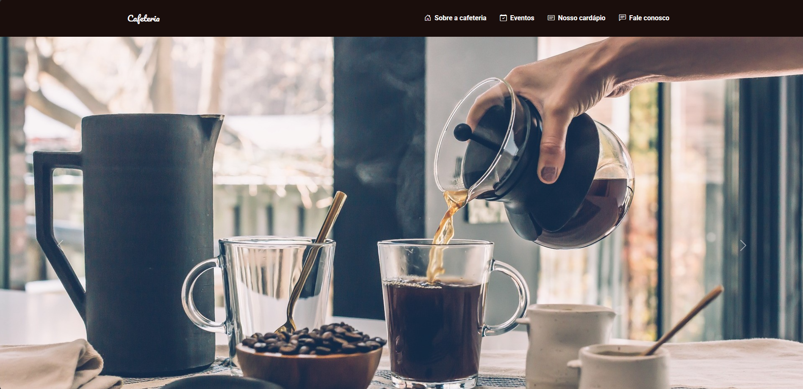

Olá, me chamo
Henrique Tavares
Desenvolvedor Front-end


Sobre mim

Educação
Análise e Desenvolvimento de Sistemas - UniCesumar
Engenharia Front-end - EBAC
Olá! Meu nome é Luiz Henrique, tenho 28 anos e sou um desenvolvedor Front-end apaixonado por tecnologia. Desde cedo, sempre tive curiosidade sobre o funcionamento de sites e páginas web, querendo entender como os desenvolvedores criavam experiências digitais incríveis e responsivas. Atualmente, estudo Análise e Desenvolvimento de Sistemas na UniCesumar e Engenharia Front-end na EBAC. Estou sempre em busca de novas técnicas e ferramentas para evoluir como desenvolvedor, criando soluções inovadoras.
Habilidades
CSS
JavaScript
jQuery
Sass
Bootstrap
React
Projetos

Clone Disney+
Criação de um clone do Disney Plus em parceria com a EBAC, como forma de aprimorar habilidades em desenvolvimento web. Foram utilizadas as tecnologias HTML para estrutura, SCSS para estilização modular, JavaScript para interatividade e Gulp para otimização. O projeto reforçou o conhecimento técnico e ampliou a compreensão sobre a arquitetura de aplicações modernas.
Ver Projeto Ver Código
Pearson Hardman
O projeto Person Hardman foi uma oportunidade de aplicar e aprofundar conhecimentos em HTML, CSS e JavaScript no desenvolvimento de uma interface web moderna e responsiva. A estrutura da aplicação foi cuidadosamente construída com HTML, enquanto o CSS garantiu um design visual atrativo e adaptável a diferentes dispositivos. Já o JavaScript trouxe interatividade e dinamismo à experiência do usuário.
Ver Projeto Ver Código

Cafeteria
O projeto de uma cafeteria foi uma excelente oportunidade para aplicar e consolidar conhecimentos em HTML, CSS e Bootstrap no desenvolvimento de uma interface web elegante, responsiva e funcional. A estrutura da página foi construída com HTML, enquanto o CSS foi utilizado para ajustes visuais personalizados. O uso do Bootstrap permitiu acelerar o desenvolvimento com componentes prontos e garantir uma experiência consistente em diferentes dispositivos.
Ver Projeto Ver Código
Ebac_tech_talks
Página de um evento fictício desenvolvida com HTML, SCSS, JavaScript e Parcel. A estrutura foi construída com HTML semântico, o SCSS garantiu uma estilização modular e escalável, e o JavaScript trouxe interatividade à interface. Com o uso do Parcel como bundler, o projeto teve um fluxo de desenvolvimento ágil, com otimização de arquivos e recarregamento automático. O resultado é uma página moderna, responsiva e com foco na experiência do usuário.
Ver Projeto Ver Código
Ebac_tech_talks
O projeto da Calculadora de IMC foi desenvolvido com React com o objetivo de praticar conceitos fundamentais da biblioteca, como componentes funcionais, manipulação de estado com useState e renderização condicional. A aplicação permite que o usuário insira seu peso e altura, e com base nesses dados, calcula o Índice de Massa Corporal (IMC), exibindo o resultado junto com a classificação correspondente (como "Peso ideal", "Sobrepeso", "Obesidade", etc.).
Ver Projeto Ver Código Contato
Contato